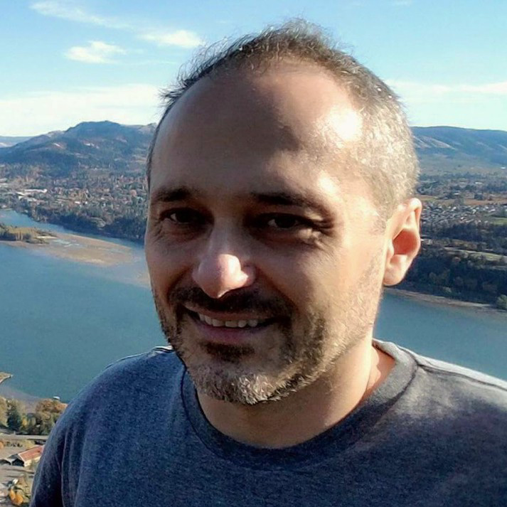

About Me

Robert J. Paruch received his Ph.D. in computational physics at the Jagiellonian University in Krakow, Poland. His long-standing research interests are in computer modeling of physical phenomena, associated analytical tools software development and data analysis aimed at improving the efficiency and productivity of experimental setups. His work experience includes a five-year postdoctoral appointment at the Pennsylvania State University, the Department of Chemistry, where his research projects focused on modeling of sputtering of materials by energetic particles and building analytical models. The results of his research helped in the development of new approaches to interpreting computer simulations, as well as optimization of the secondary-ion mass spectrometry analytical technique.
Coauthored over 25 scientific publications as a result of independent and collaborative work within the research group, peer-reviewed research publications, and presented the results of research at numerous international conferences and workshops.
In his spare time, he enjoys cooking, sightseeing and photographing.
Currently attending the Coding Bootcamp at the University of Oregon in order to round out the skills and gain the additional experience required to peruse the career opportunities in the industrial workspace.